Integrating FOSS into GIScience Curriculum & Research
Helena Mitasova and Vaclav Petras
NCSU
OSGeoREL
at
Center for Geospatial Analytics
North Carolina State University
November, 2015
Free and open source software is a norm
Open Source Software Is Now a Norm in Businesses
Katherine Noyes, PCWorld, May 18, 2011
Open Source has Become Mainstream but Still Drives Innovation
Talend Yves de Montcheuil, ZDNet, May 2, 2012
Free and open source software is ubiquitous
10 of Europe's 15 largest banks are now running [...] Postgres
Sandor Klein said for ZDNet (Toby Wolpe), November 19, 2013
64% of internet exchange points are now using [...] an open source solution
Gijs Hillenius, Joinup Open source observatory, June 8, 2015
Free and open source software, everybody is doing it
Redmond top man Satya Nadella: 'Microsoft loves Linux'
Neil McAllister, The Register, October 20, 2014
Open Sourcing Is No Longer Optional, Not Even for Apple
Klint Finley, WIRED, June 9, 2015
Free and open source software for needed in science
Software [...] developed as part of novel methods is as important for the method's implementation [...] Such software [...] must be made available to readers upon publication.
Social software, Nature Methods 4, 189, 2007

No science without free and open source software
The opposite of ‘open’ isn’t closed. The opposite of open is ‘broken.’
Cable Green (quoting John Wilbanks) at Open Scotland Summit 2013

Free and open source software enhances science
- Sharing
- Reproducibility
- Only journal papers not enough
Courses at North Carolina State University
Listing only geospatial courses where presentation authors are involved.
The original idea
- lectures:
- theory, concepts
- software-independent
- labs and assignments:
- relate to given lecture
- hands-on, practical
- students use software
The problem
- students are becoming (only) software users instead of scientists
- students mix software details and general concepts
- saying Shapefile or feature class instead of vector data (OGC Glossary)
- bonding with software limits flexibility
- software promotes software/vendor-specific formats/technologies
- single software choice limits explored algorithms
The solution
- lectures:
- theory, concepts
- software-independent
- labs and assignments:
- relate to given lecture
- hands-on, practical
- students use two different software packages, in our case:
- GRASS GIS (free and open source)
- ArcGIS (proprietary)
- similar task in both
- opportunity to see what is a general concept and what is specific to a particular software
Geospatial Analysis and Modeling
- since 2008
- on-campus and distance
- every semester 30-60 students
- GRASS GIS, ArcGIS
- workflow for software provided
- students write reports with general theory and methods
Assignments

Makiko Shukunobe, spring 2012
Assignments
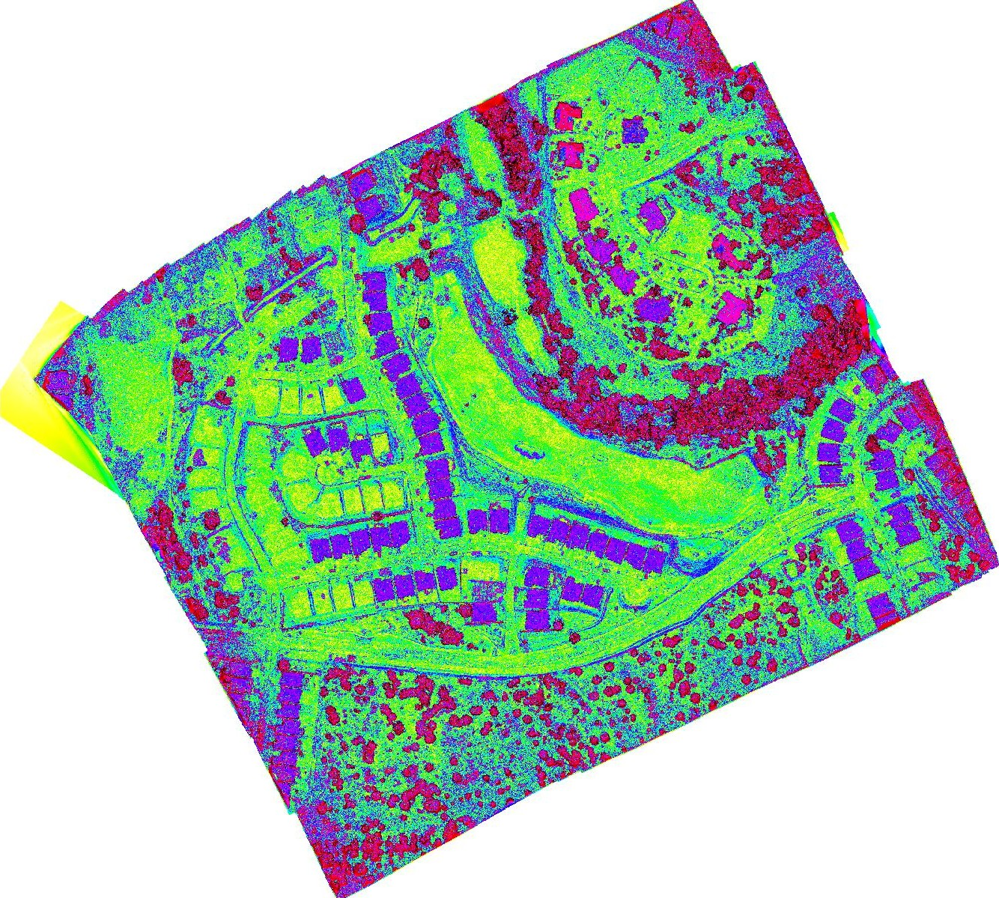 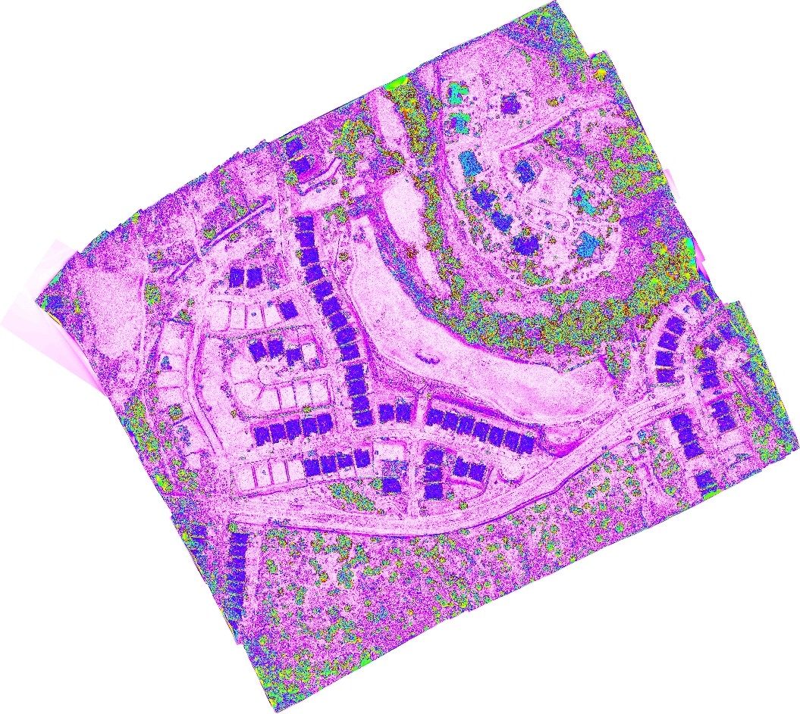Assignments
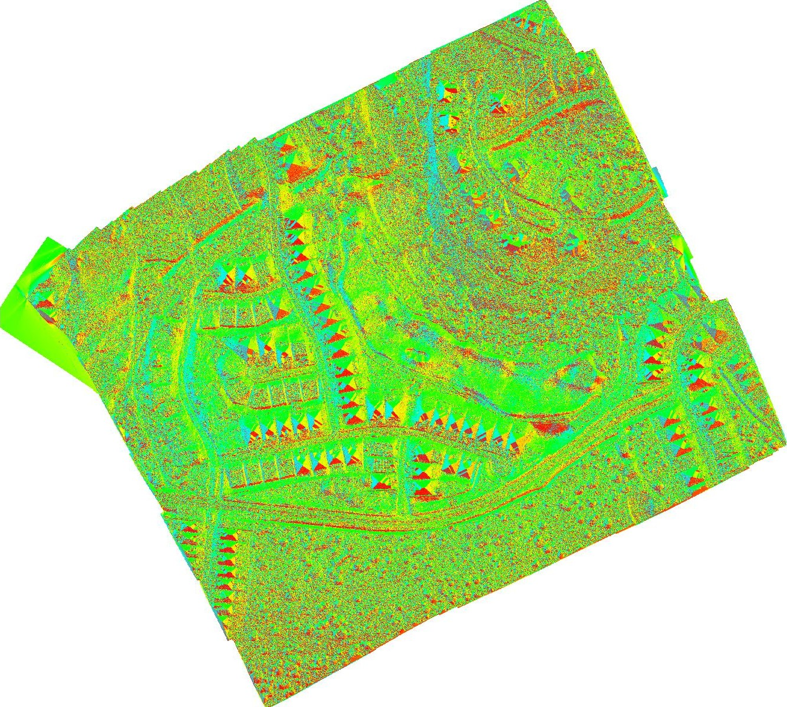 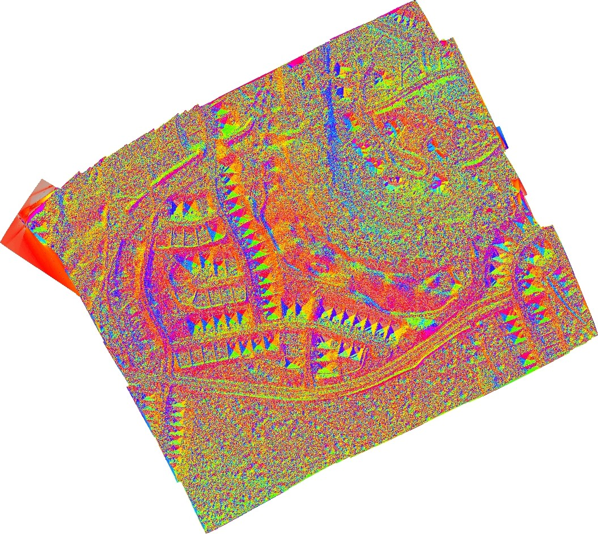Assignments
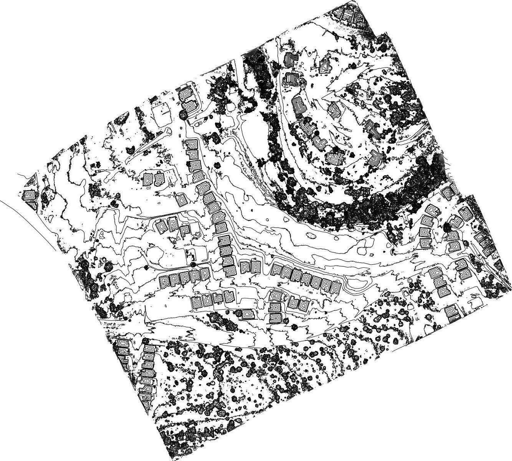 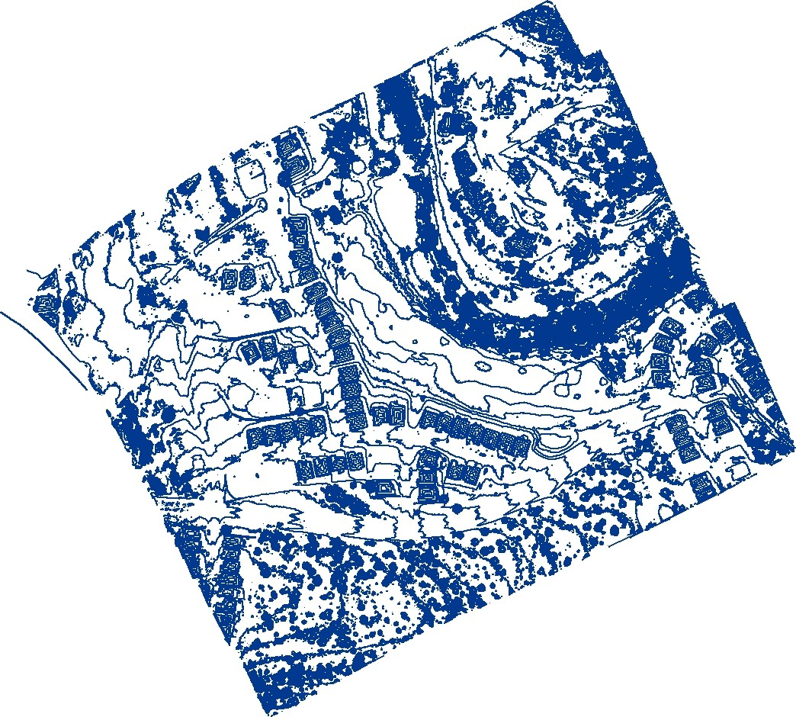Assignments

Makiko Shukunobe, spring 2012
Multidimensional Geospatial Modeling
- software:
- GRASS GIS, often with new features such as Temporal Framework
- + whatever the students need, e.g. XBeach, libLAS or LAStools
- new technologies: Tangible Landscape, NCSU Hunt Lib Teaching and Vis Lab, eye tracking
GIS for Designers
- software in class:
- ArcGIS (proprietary)
- GRASS GIS (open source)
- Rhino (proprietary)
- Tangible Landscape
- for projects, architects and designers usually combine a lot of tools including tools for graphics
UAV/lidar Data Analytics
- Agisoft PhotoScan and experimentally OpenDroneMap
- GRASS GIS, Python
 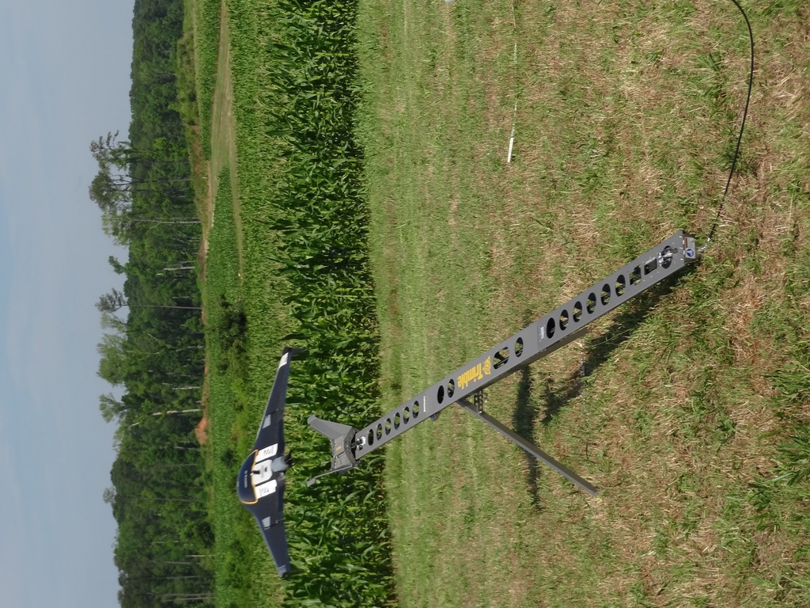
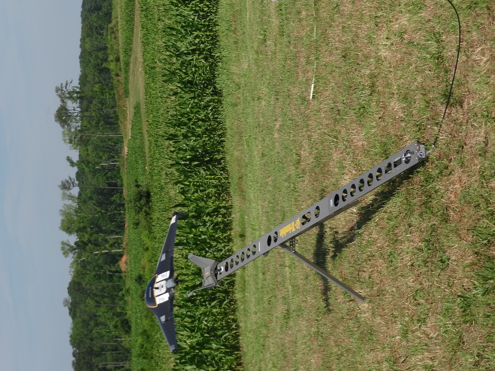
Teaching materials
- file format
- originally HTML, selecting new
- Markdown, no general standard
- reStructuredText, hot candidate
- result: HTML
- presentation slides in HTML5 (Reveal.js)
- originally HTML, selecting new
- license: CC BY-SA
- Git (GitHub hosted) for revision control, collaboration and sharing source code
Teaching materials

GRASS GIS advantage for teaching materials maintenance
- GRASS GIS workflow recorded as commands.
- Screenshots are hard to update while text is easy to update.
- GUI dialog filled according to the command.
- Commands can be automatically extracted and tested.
- Text also for ArcGIS, but the names in dialogs are not part of the API, so they change.

GRASS GIS advantage for starting with Python
- GRASS GIS workflow recorded as commands.
- Python interface for GRASS GIS follows the command line interface.
r.slope.apsect elevation=elev_ned10m_nn aspect=aspect_ned10m_nn
gscript.run_command('r.slope.apsect',
elevation='elev_ned10m_nn',
aspect='aspect_ned10m_nn')
More details in the paper
Vaclav Petras, Anna Petrasova, Brendan Harmon, Ross K. Meentemeyer and Helena Mitasova. Integrating Free and Open Source Solutions into Geospatial Science Education. North Carolina State University. In: ISPRS International Journal of Geo-Information. 2015.Open Access, doi:10.3390/ijgi4020942

Geo for All
- Making geospatial education & solution accessible to all
- establishing research and teaching opportunities
- building global open access teaching infrastructure
- worldwide network of lab exchanging students and faculty
- collaboration between academia, schools, government and industry around open geospatial science and education
- connection to existing organizations
- OSGeo Foundation
- ICA
- ISPRS
- join at: www.geoforall.org/how_to_join
First small steps to improve courses
- use general terminology, instead of software specific terms
- always mention also alternative software packages for a given task
- prefer standards over software specific formats and services
- use OGC standards in GIS, W3C in web development
- explicitly allow and support using open source in students' projects
- in classes, use open source for secondary tasks
- Inkscape for vector graphics
- use open source yourself
First small steps to improve courses
- use generally accepted open solution
rather than vendor-specific solution
- several years ago CGA switched from VBA to Python for GIS programming classes
- replicate part of the course using open source and have it at least as optional
- assignments or projects to create teaching material for the class
- include open source as experimental part of the course
- allow students to pick one or the other
Educate educators
- Start with educating the teachers.
- You should have enough people to fill in for the current people teaching it (same as for any other courses).
- Instructors involvement in community is more important than students in involvement community and must come first.
- Get sign up for a mailing list, e.g. grass-user or qgis-user.
Existing materials
examples
- For QGIS
- Created by NCSU OSGeoREL
Use, improve, modify, customize existing materials.
NCSU OSGeoREL workshops
- Introduction to GRASS GIS, delivered at NCSU
- Spatio-temporal data handling and visualization in GRASS GIS, FOSS4G 2014 (Portland), also delivered at NCSU
- Soil erosion and deposition modeling, tutorial, part of broader project, workflows for GRASS GIS and ArcGIS
- How to write a Python GRASS GIS 7 addon, FOSS4G Europe 2015 (Como), also delivered at NCSU
- Urban growth and open source GIS, planned for US-IALE Asheville 2016
OSGeo Educational Content Inventory
- List of resources created by the community
- Hosted by OSGeo Foundation
- Search at: osgeo.org/educational_content
- Register your course materials, so other may find them.
Standardized Sample Datasets
- region specific datasets limit sharing of hands-on teaching material
- different datasets should use the same standardized names
- commonly available data, frequently used in examples
- standardized names such as elevation, streets, or lakes
- rather than srtm, dem10m, streets_raleigh
- wiki page
- Create one for your region.
Example instructions
g.region raster=elevation
r.relief input=elevation output=shade
d.shade shade=shade color=elevation

Standardized Sample Dataset: North Carolina, USA
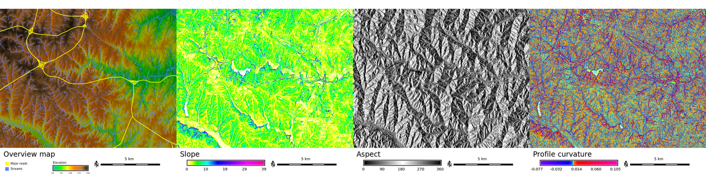by Helena Mitasova and Markus Neteler, originally for Open Source GIS: A GRASS GIS Approach
Standardized Sample Dataset: Czech Republic
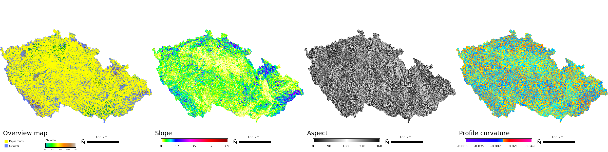by Martin Landa and Jachym Cepicky, GISMentors
Standardized Sample Dataset: Piedmont, Italy
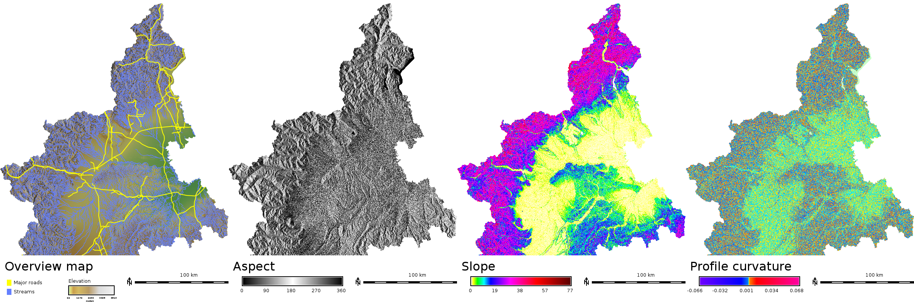by Luca Delucchi and Markus Neteler, Research and Innovation Centre, Fondazione Edmund Mach, Italy
Standardized Sample Dataset: Puerto Rico
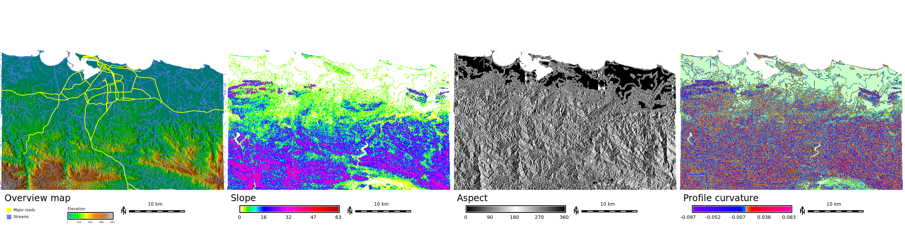by Keren Cepero-Perez, Department of Marine, Earth, and Atmospheric Sciences, North Carolina State University, USA
Beyond courses
- workshops
- Workshops are a way how to experiment with what to teach and how.
- specific support for code and documentation contributions as part of service-learning
- code sprints, community sprints, hackfests
- often associated with conferences
- software development, documentation, data
- novices, beginners and advanced users and contributors
- Google Summer of Code
Future directions: Tools for open science course
- Course dedicated to
- exploring important role FOSS plays in science
- overview of tools and methods common in FOSS and desperately needed in science
- open access, open data, open standards, open...
- reusability and reproducibility are standard in FOSS
Image credit: opensource.com
Future directions: Software, technologies and platforms
Future directions: IPython Notebook
- IPython Notebook
- Used in workshop How to write a Python GRASS GIS 7 addon.
- Jupyter (works for Python, R, C++, ...)
- JupyterHub, tmpnb, nbgrader (management, grading)
Future directions: Software, technologies and platforms
- OSGeo-Live in VCL for easy lab setup
- GIS.lab for easy lab setup
- desktop to browser: GTK+ Broadway, noVNC, OpenStack with SPICE
Future directions: Enhanced teaching materials
- web-based tool to explore algorithm behavior in teaching materials
- link teaching materials, standard user manual and the source code
Summary
- improve students' geospatial skills by teaching 2 software packages
- as a teacher, join the open source software community
- use available tools like Git and HTML to create teaching materials
- use OSGeo Educational Content Inventory and mailing lists to tell others about it
- as an institution, invite local community for a code sprint